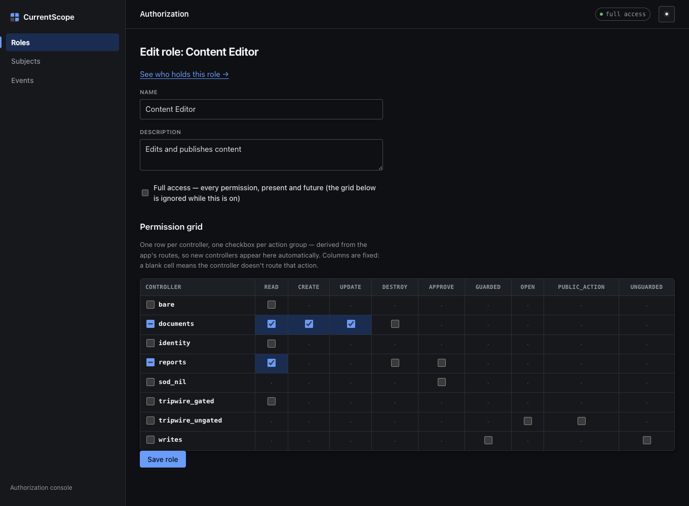
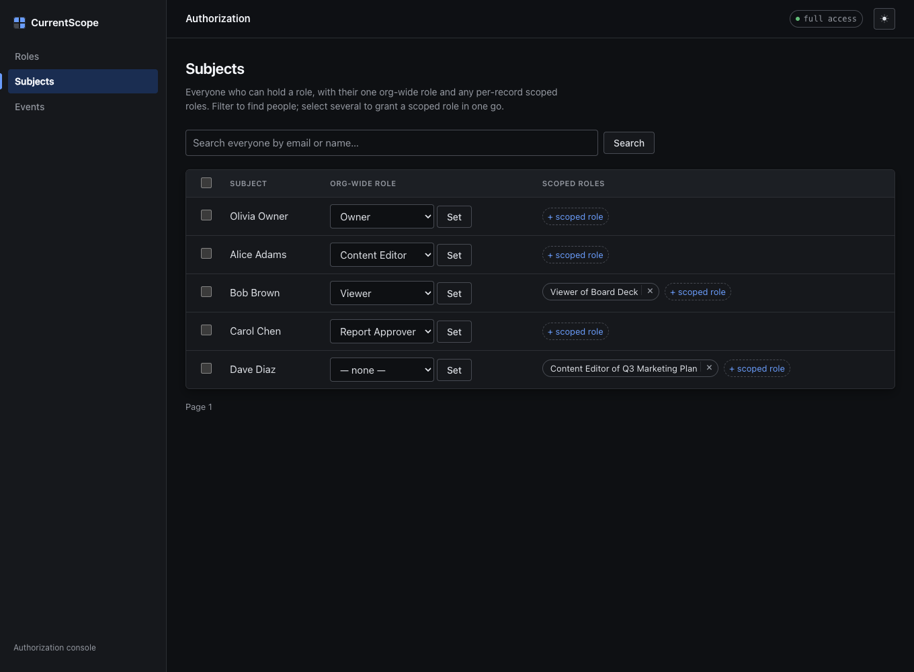
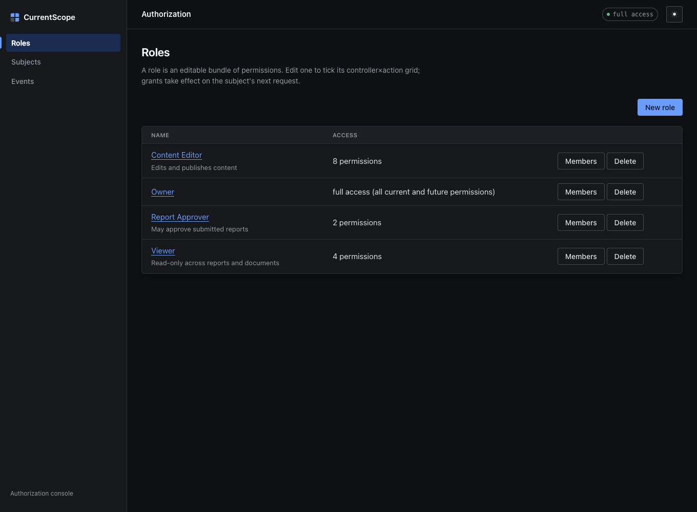
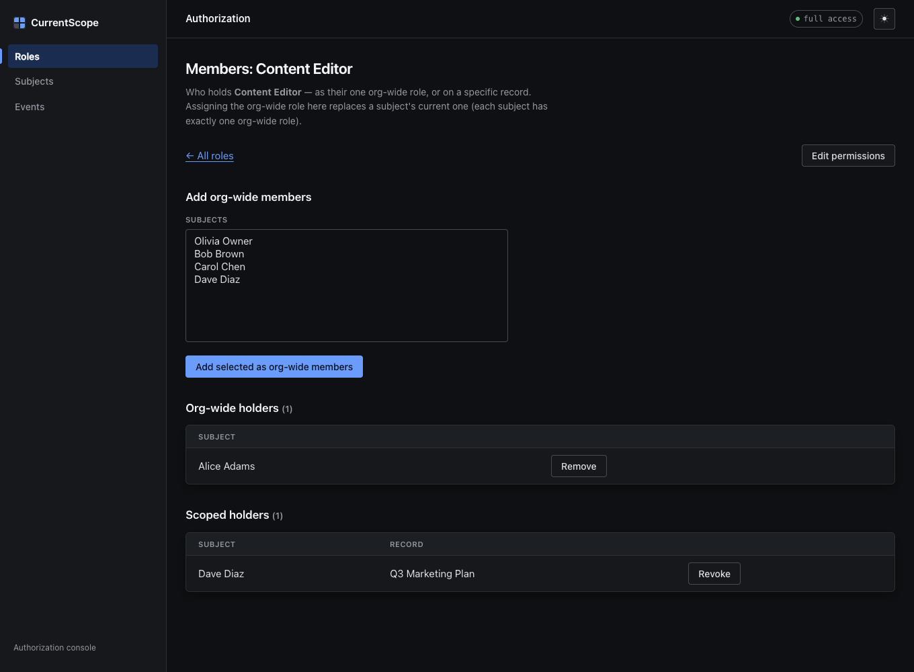
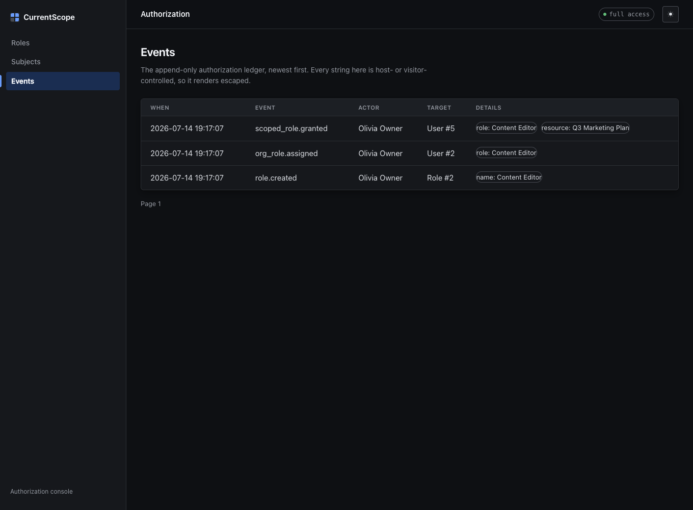

Authorization as data you edit in a UI — not rules you hardcode.
Permissions auto-derived from your routes. Roles as editable rows. Per-record scoped grants. One ambient context so allowed_to? gives the same answer in controllers, views, and components.
Stop scattering if user.admin? across the codebase.
Hardcoded checks drift, hide in views, and need a deploy to change. CurrentScope moves the policy into data your team edits in a UI — and reads it back the same way everywhere.
Rules compiled into the app
Every rule is code. Changing what “Reviewer” means is a pull request, a review, and a deploy. The view and the controller can silently disagree.
# scattered, and a deploy to change if user.admin? || user.role == "reviewer" approve!(report) end # …and did the view remember to hide the button?
Policy is data, read one way
Roles are editable rows in the mounted UI. Controller, view, and component ask the same resolver — one ambient context, no current_user threading.
# same answer in controller, view, component allowed_to?(:approve, report) # change "Reviewer" in the UI — no deploy
Add the gem, run the generator, and it’s wired.
Permissions from your routes
Every controller#action pair is a permission. Add an OrdersController and its actions appear in the grid — zero wiring.
Roles as rows, not classes
A role is a named, editable bundle of ticked cells on a controller × action grid. Change what “Reviewer” means without a deploy.
Scoped roles
The same role on one specific record. “Editor of Project #7” grants nothing on Project #8 — enforced by the same resolver.
Separation-of-duties veto
Opt in by listing actions. Once on, whoever initiated a record can never approve it — not grantable, not clickable, overriding even full access. A structural guarantee. The full anti-fraud story →
Fail-closed by default
No grant means denied. Everything is a permission — even the baseline actions every signed-in user can do. Nothing is implicitly allowed.
One ambient context
The subject flows through CurrentAttributes from the gate to the smallest ViewComponent. The view can’t disagree with the gate — no current_user threading, ever.
One fixed decision order. Every check, everywhere.
There is exactly one path from “who is this and what do they want” to allow or deny. Controllers, views, and components all walk it — so they can never drift apart.
Why the order matters
The veto sits first on purpose. Separation of duties isn’t a permission you can out-rank — a full-access owner who filed a report still can’t approve their own. It’s not configurable in the UI, because it’s a control, not a preference.
Everything below is additive: full access short-circuits, then org-wide, then per-record. Miss all of them and you’re denied. There is no implicit allow.
The veto is off by default — how to enable it, verify it’s live, and when to break the glass.
Mounted at /current_scope. Self-contained, light & dark.
No web fonts, no build step, CSP-safe. The people who own the policy edit it here — developers never become a ticketing queue for “can you give Dana approve rights?”.





Ask once. The same answer, anywhere.
allowed_to? lives in controllers and views via one concern, and in any PORO or ViewComponent by mixing in CurrentScope::Permissions. The list-side question has an answer too.
# key derived from the record → reports#approve allowed_to?(:approve, report) # class form for collection actions allowed_to?(:create, Report) # explicit key when you need it allowed_to?("admin/reports#approve")
class ApproveButtonComponent < ViewComponent::Base include CurrentScope::Permissions def render? !report.approved? && allowed_to?(:approve, report) end end # the button literally can't render when the gate would refuse
# allowed_to? answers "may I act on THIS record?" # scope_for answers "WHICH records may I act on?" # — from the same roles, permissions, and scoped grants. def index @projects = scope_for(Project) end # the list and the per-record gate stay one source of truth
class ApplicationController < ActionController::Base include CurrentScope::Context # ambient subject from current_user include CurrentScope::Guard # fail-closed gate on every action end # opt out only where authz doesn't apply (sign-in, webhooks) class SessionsController < ApplicationController skip_before_action :current_scope_check! end
Mounted and gating in six steps.
# Gemfile gem "current_scope"
bin/rails generate current_scope:install bin/rails current_scope:install:migrations && bin/rails db:migrate
ApplicationController.include CurrentScope::Context # sets Current.user from current_user include CurrentScope::Guard # fail-closed gate on every action
class SessionsController < ApplicationController skip_before_action :current_scope_check! end
bin/rails current_scope:grant SUBJECT_ID=1
/current_scope — the role grid, org-wide assignments, scoped grants.Adding this to an app that already has users? Run report mode before enforcing — and read the security & production checklist before you ship.
Authorization your team can read.
A structural guarantee where you need one, an editable grid everywhere else. Add it to a real Rails app in minutes.